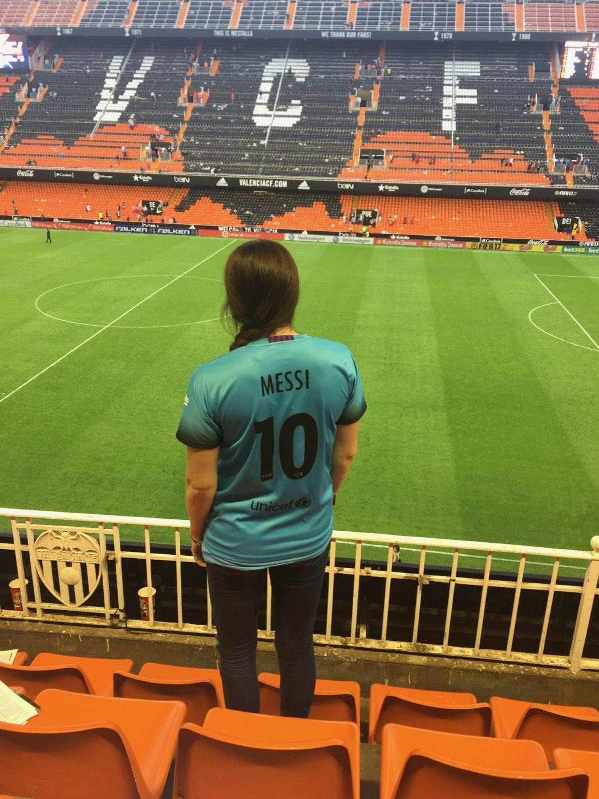
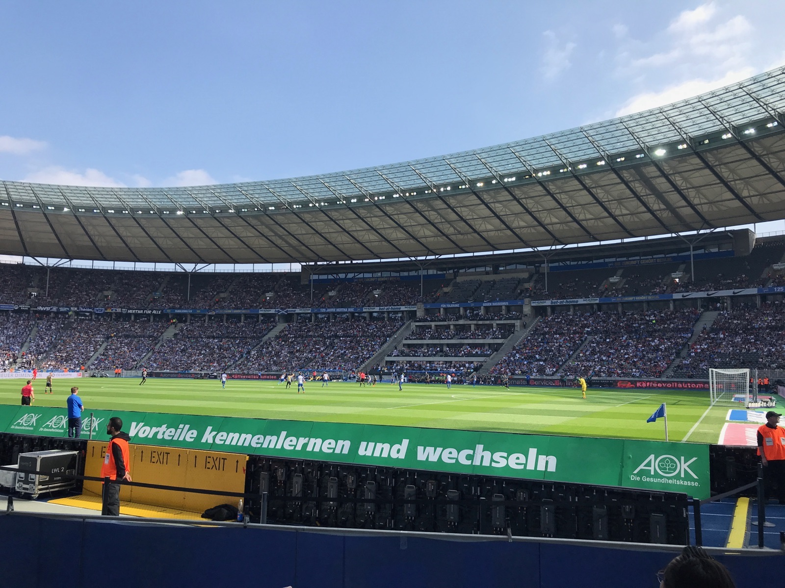
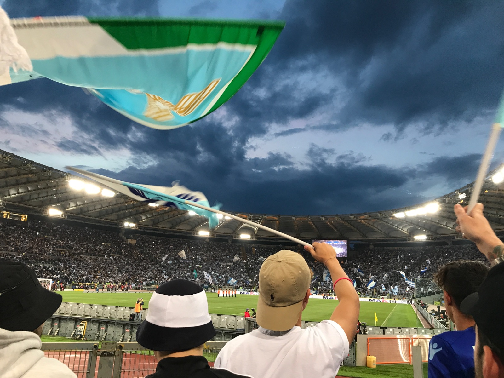
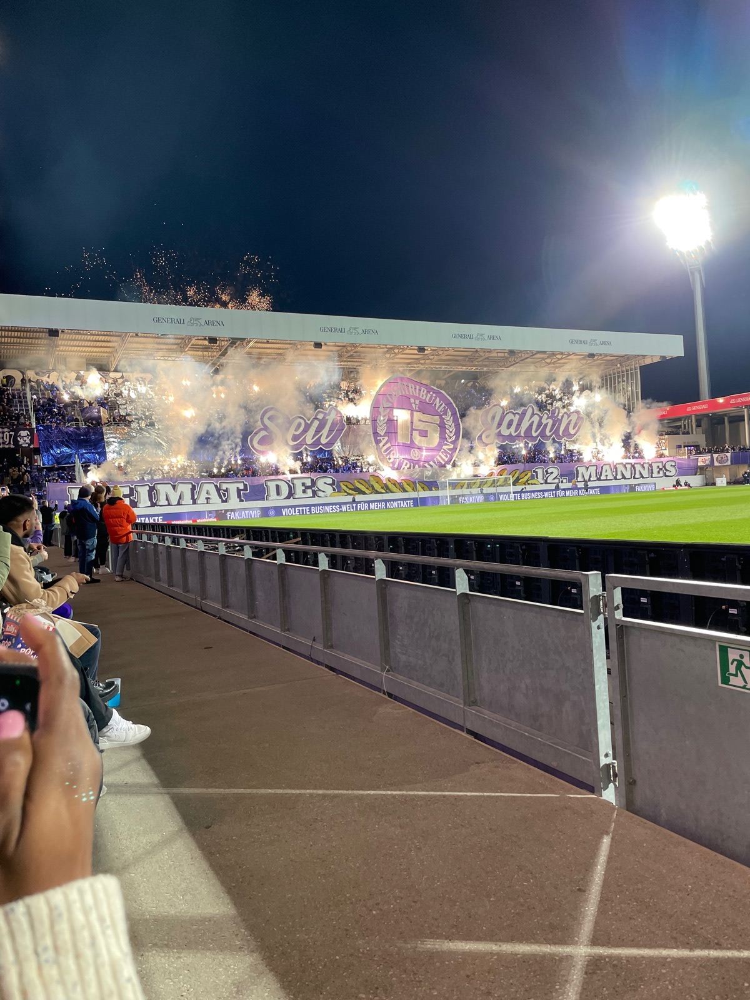
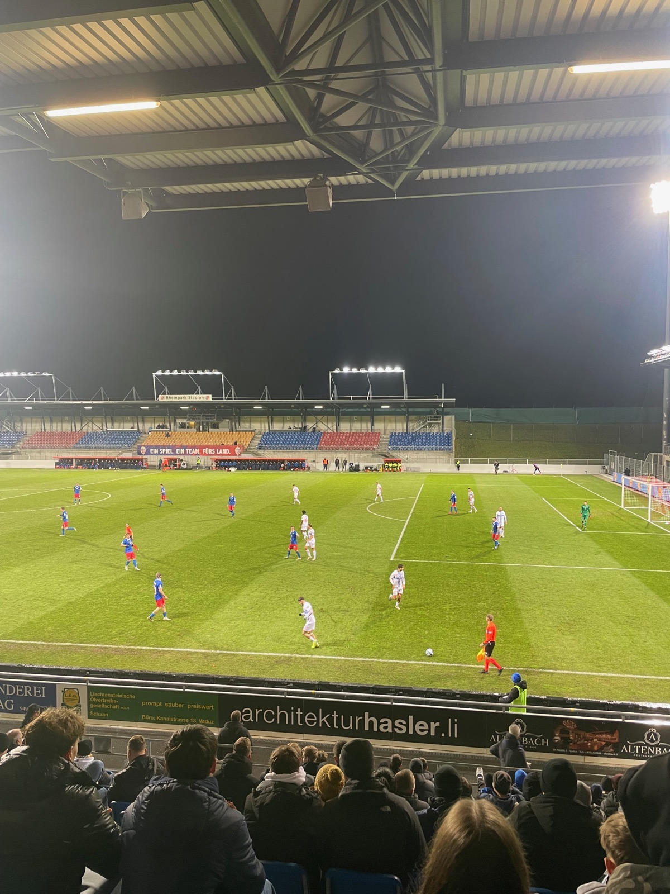
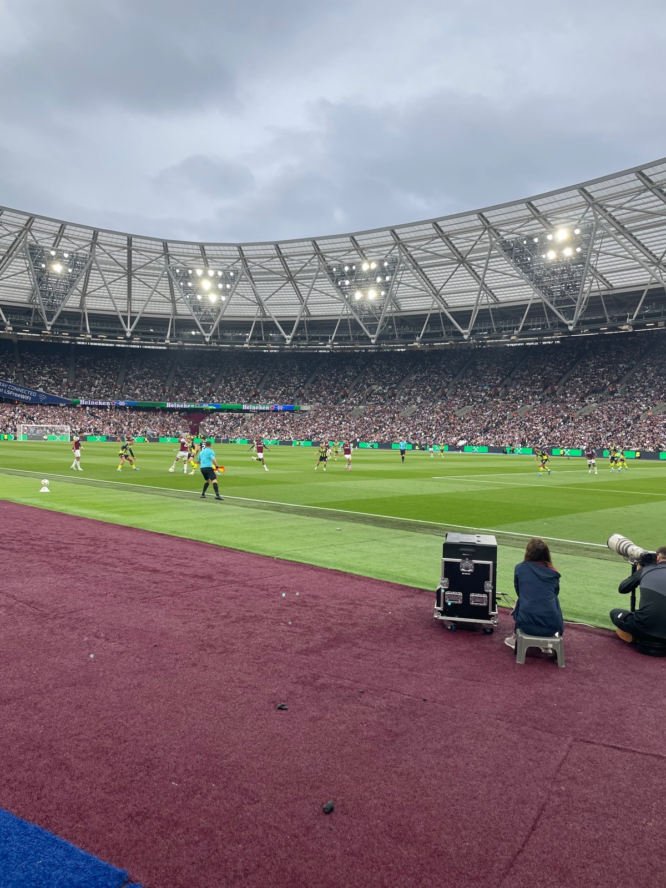
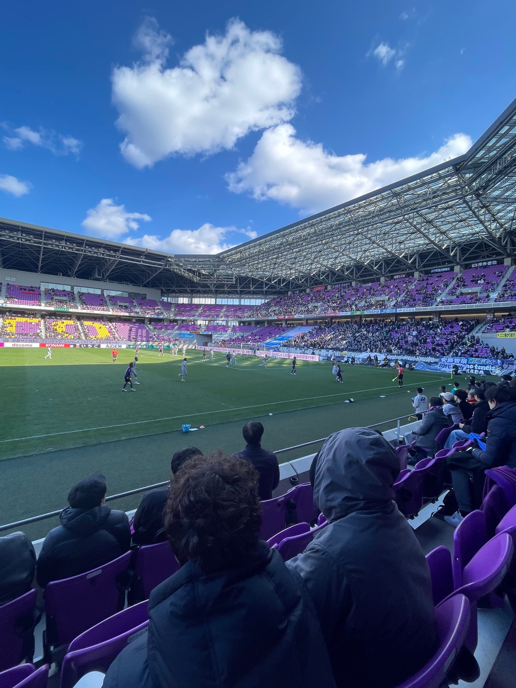
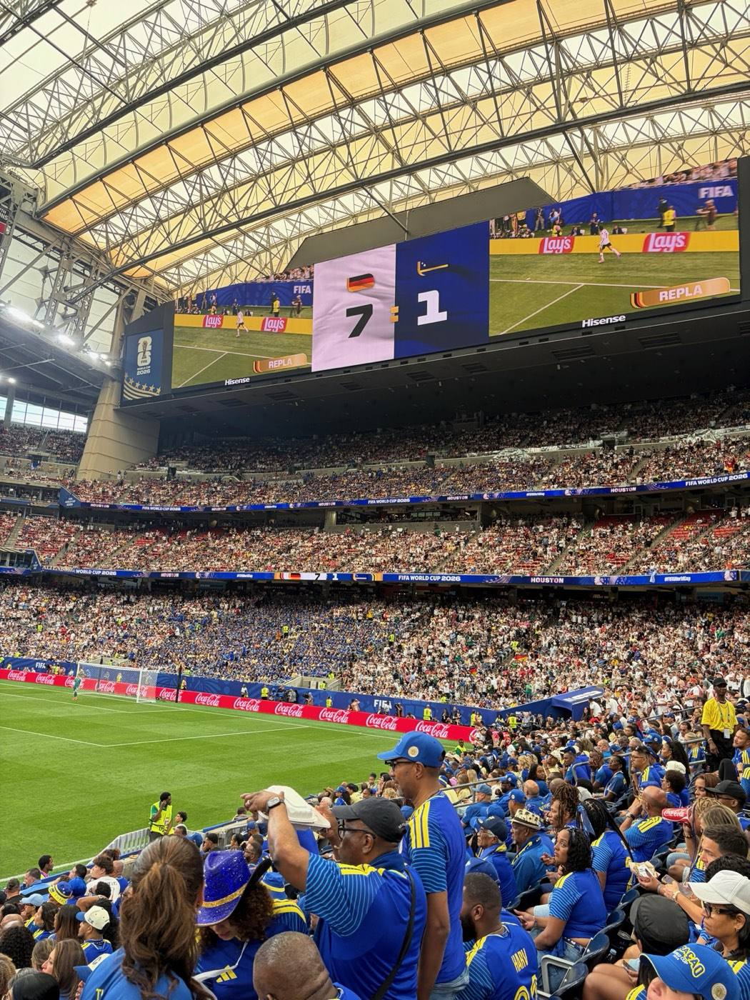
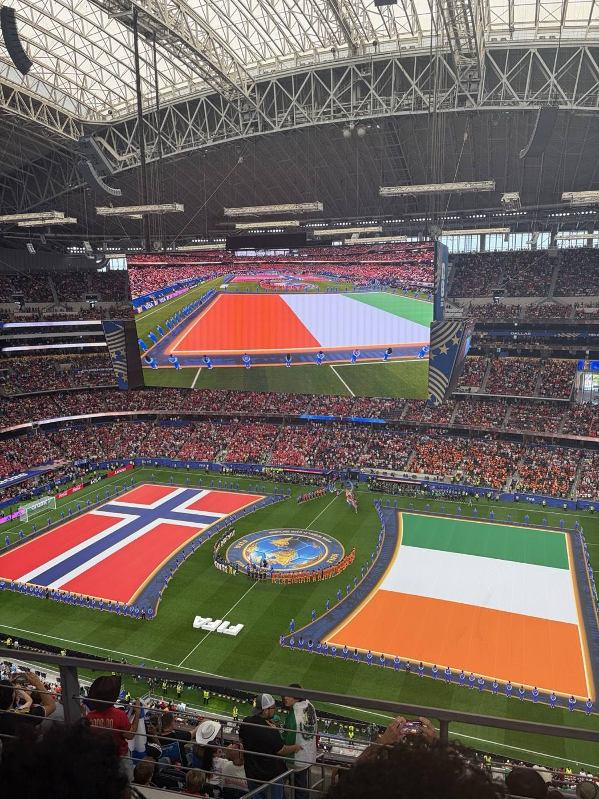
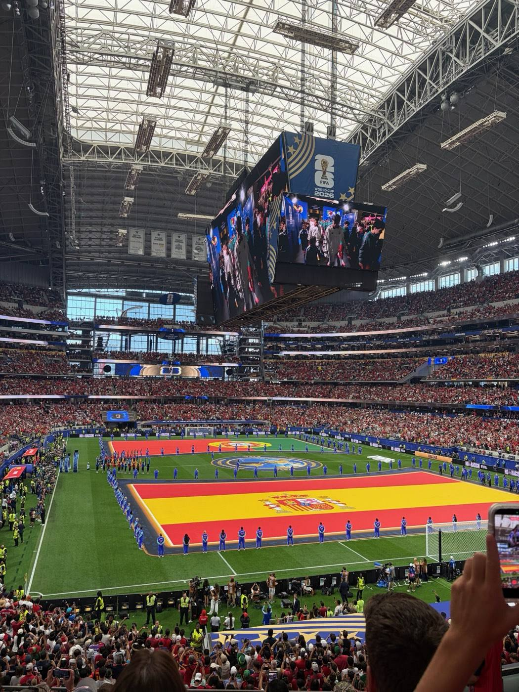

La Liga
Valencia vs Barcelona
Mestalla, Valencia, SpainMessi scored twice, the second a stoppage-time penalty to win it.
No. 12–3Oct 22, 2016
My goal is to go to a game in every country's top league at some point. Six leagues down so far: La Liga, the Bundesliga, Serie A, the Austrian Bundesliga, the Premier League, and Japan's J1 League. Add in national-team games and the World Cup, and that's eleven matches in nine countries since 2016, from Messi at Mestalla to three World Cup games in Texas. This is the running list, and I'll keep adding to it.
Numbers match the tickets below. Tap a group to zoom in. Both Dallas games were at AT&T Stadium.

Messi scored twice, the second a stoppage-time penalty to win it.

The afternoon we arrived in Berlin. Leipzig ran away with it.

Last game of the season, with a Champions League spot on the line. Inter came from behind late to take it.

Austria Wien missed a penalty in the 90th minute, so it stayed 0–0.

The smallest stadium on the list, with room for about 7,500. We bought tickets in advance.

Haaland scored a hat-trick.

A short train ride from Kyoto. I booked tickets online in advance and fit it in between a tea ceremony and a sound bath.

Curaçao's first World Cup game. They scored their first-ever World Cup goal to tie it 1–1 before Germany pulled away.

Haaland scored the winner with four minutes left.

Merino came off the bench and scored in stoppage time to send Portugal home.

I walked out from the city center and took the bus back afterward.